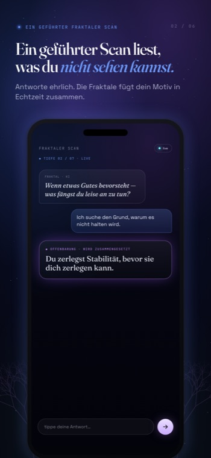
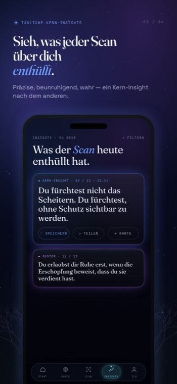
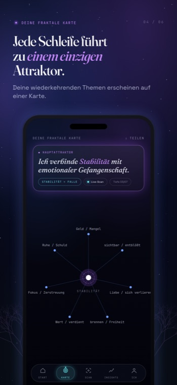
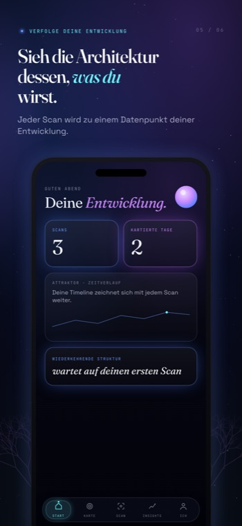
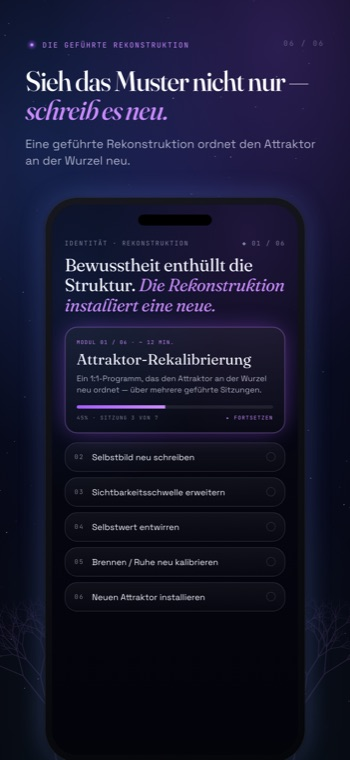

Kein Feed, keine Funktionsliste zum Verwalten. Jeder Teil von Fractalogie weist in dieselbe Richtung – zur einzigen Schleife, die still dein Leben lenkt, und zur Struktur darunter.

Ein ruhiges, lebendiges Gespräch mit einem Spiegel, der jeweils eine destabilisierende Frage stellt.
Keine Flut von Eingabeaufforderungen. Keine Ratschläge. Kein Fragebogen mit zwanzig Feldern. Nur ein präziser Faden, bis ganz nach unten verfolgt – bis der Auslöser, deine Reaktion, die Emotion, die er schützt, und der Preis, den du immer wieder zahlst, von selbst in den Fokus rücken.

Jeder Scan liefert eine einzige, prägnante Erkenntnis – keinen Feed zum Scrollen.
Der Spiegel benennt eine Wiederholung, die du nicht in Worte gefasst hattest. Ein Satz, der die Schleife hält: „Wenn ___, dann ___, weil ich ___ fühle, und es führt zu ___.“ Du gehst nicht mit Hausaufgaben. Du gehst und siehst etwas, das du nicht mehr ungesehen machen kannst.

Jede Schleife, die du entschlüsselst, führt zurück zu einem primären Attraktor.
Beziehungen, Geld, Arbeit, der Körper – sie sehen aus wie getrennte Probleme, doch die Karte zeigt, dass sie derselben Struktur folgen. Nicht viele Probleme. Eines, das sich in verschiedenen Maßstäben wiederholt. Sie sich verbinden zu sehen ist der Punkt, an dem das Bild aufhört, abstrakt zu sein.

Gespeicherte Motive bauen über die Zeit ein lebendiges, sich entwickelndes Bild deiner Struktur auf.
Jede Offenbarung, die du behältst, fügt der Zeichnung eine Linie hinzu. Monate später schaust du nicht auf verstreute Notizen – du schaust auf die Form deiner selbst, wie sie sich verschiebt, wo sie sich lockert. Die Architektur ist nicht festgelegt. Sie wird, und du darfst zusehen.

Wenn Sehen nicht genügt, ordnet eine private 1:1-Rekonstruktion die Identität neu, die die Schleife erzeugt.
Die App enthüllt die Struktur. Die Rekonstruktion ist der Ort, an dem sie neu aufgebaut wird – an der Wurzel, in einer privaten Sitzung mit einem echten Menschen. Für Schleifen, die sich immer wieder wiederholen, selbst nachdem du sie benannt hast, und du bereit bist, die Selbstdefinition zu verändern, die sie an ihrem Platz hält.
Die Dinge, die wir bewusst nicht gebaut haben, sind Teil des Produkts. Keine Kamera, keine Werbung, keine Datenhändler – nur ein Spiegel, dem du vertrauen kannst.
Keine Kamera, keine Fotos, kein Mikrofon. Fractalogie liest nur, was du zu schreiben wählst.
Keine Analytics-SDKs, keine Werbenetzwerke, keine Datenhändler. Nichts folgt dir aus der App heraus.
Das Kernerlebnis läuft ohne Anmeldung. Ein Konto fügt nur optionalen Cloud-Sync hinzu.
Lösche dein Konto und jedes Stück Cloud-Daten sofort, direkt aus der App heraus.
Die Oberfläche und jede Analyse folgen deiner gewählten Sprache – Englisch, Französisch, Spanisch, Deutsch.
Deine Worte werden verwendet, um deine Analyse zu erzeugen – niemals, um Modelle zu trainieren, weder unsere noch die anderer.
Dein erster Scan ist kostenlos – kein Konto, kein Tracking, kein Lärm. Founding Access schaltet das volle Erlebnis frei.